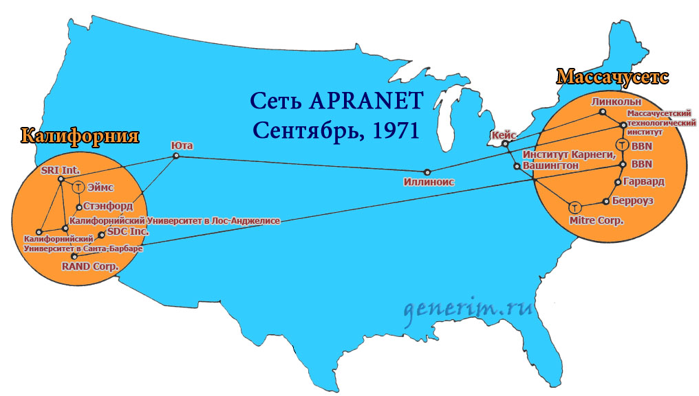
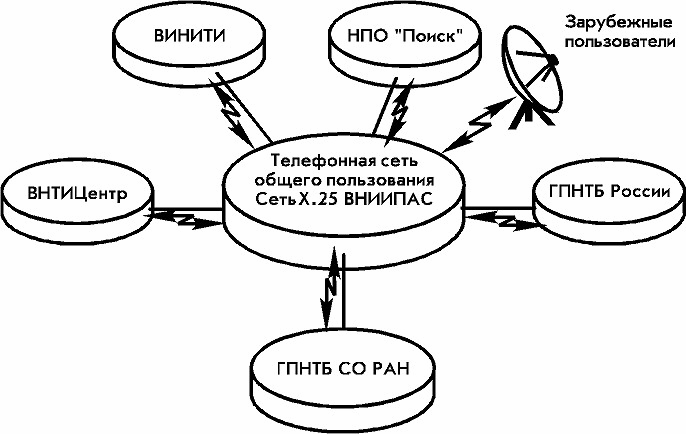
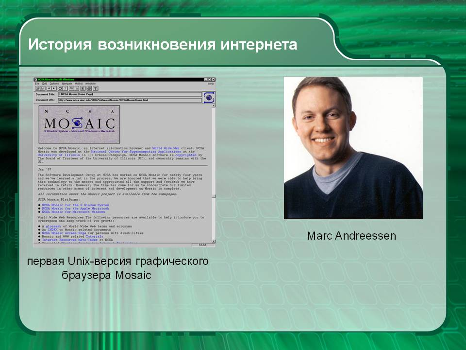
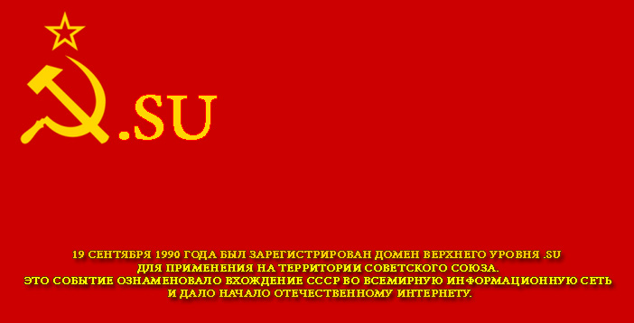

Происхождение интернета
Интернет родился как результат противостояния СССР и США. В Америке полагали, что СССР вот-вот нападёт на них, а тут ещё в 1957 году Советы спутник запустили. Совсем беда! И решили в Штатах, что на случай войны непременно надо иметь какую-то бесперебойную систему связи для раннего оповещения о ракетной атаке. Работа над новой системой связи под названием ARPANET (Advanced Research Projects Agency Network) была поручена нескольким университетам.
Первый реальный результат был получен в 1969 году, 29 октября. Именно в этот день в 9 часов вечера была предпринята первая успешная попытка связи между университетами в Стэнфорде и в Лос-Анджелесе. Оператору Чарли Клайну в Лос-Анджелесе удалось подключиться к стэндфордскому компьютеру и передать кодовое слово.Первая программа отправки электронной почты появилась в 1971 году и сразу же завоевала популярность в США.

В ходе работы над созданием общей сети был разработан протокол TCP/IP (Transmission Control Protocol/Internet Protocol – Протокол управления передачей/Межсетевой протокол). Эти принципы и протокол функционирования сети действуют и по сей день. Переход всех компьютеров сети ARPANET на протокол TCP/IP произошёл в 1983 году. Тогда впервые сеть ARPANET назвали Интернетом.
Однако в 1984 году Национальный научный фонд США (NSF) основал новую межуниверситетскую сеть NSFNet (англ. National Science Foundation Network), созданную из нескольких более мелких. Поскольку аудитория NSFNet росла быстрее ARPANET, название интернет перешло к ней. Этот год ознаменовался так же появлением системы доменных имён Domain Name System, DNS.
Первый трансатлантический кабель сети ARPANET из США в Европу был проложен в 1973 году, подключив Англию, Швецию и ещё несколько стран. СССР опоздал, как обычно, на десятилетие. Первые советские компьютеры подключились к европейским сетям в 1982 году. Тогда сотрудники Всесоюзного НИИ прикладных автоматизированных систем наладили постоянный канал связи с Венским институтом системного анализа.
Интернет в СССР
Это был чисто научный канал. С него начала формироваться сеть Академии наук. Она не была общедоступной. К ней могли подключаться только научные работники, но зато им стали доступны западные научные библиотеки с диссертациями, монографиями и пр. В 1989 году в СССР сотрудники Курчатовского института, Минавтопрома
Лишь когда разрешили кооперативы, появилась сеть «Релком» от кооператива «Демос», но это случилось уже в 1990 году. В этом же году был зарегистрирован домен SU, принадлежащий Советскому Союзу. Пошёл процесс коммерциализации сети. Кстати, перед развалом СССР, коммерческие конференции помогли стабилизировать цены, поскольку были прямым источником информации о том, где что почём. К сожалению, эти же сети сыграли немалую роль и в утечке мозгов.
В августе 1991 года советский интернет был одним из немногих каналов, который в реальном времени передавал все новости, включая и те, что своими глазами видели москвичи из окон квартир. В эти дни к Релкому подключилось огромное количество серверов по всему СССР.
Период формирования всемирной сети
Популярный в 90-е годы веб-браузер Mosaic был разработан в 1993 году NCSA.С 1995 года маршрутизировать сетевой трафик начали сетевые провайдеры, освободив таким образом университетские суперкомпьютеры NSFNet для научной работы. Тогда же для упорядочивания веб-стандартов был создан Консорциум всемирной паутины W3C. С 1996 года протокол WWW обогнал по трафику FTP.
Сочетание веб-протокола http и веб-браузера Mosaic способствовало росту популярности интернета. Через два года после появления браузера интернет стал известен во всём мире. В эти годы большинство существовавших отдельно сетей объединились с интернетом, а те, которые гордо остались в стороне, как Фидонет, постепенно сошли на нет.
1994 году домен SU перестал регистрировать новых пользователей, поскольку Россия получила домен RU. Домен SU было рекомендовано потихоньку свернуть и ликвидировать. Однако, не смотря на прекращение регистрации и рекомендации «ликвидировать», домен продолжал полулегально существовать и потихоньку развиваться, пока, наконец, уже в 2000-х годах его деятельность не была полностью легализована.
К 1997 году к интернету было подключено по всему миру около 10 млн. компьютеров, зарегистрировано более 1 млн. доменных имён. С этого времени Интернет начал превращаться в один из самых популярных источников информации и постепенно приобрёл современный облик.
В России к 1997 году уже появились первые интернет-газеты, возникла поисковая система Yandex.ru, начали действовать хакеры. Правда, весь российский интернет или Рунет, как стали его называть, запросто поместился бы на одном жёстком диске современного компьютера. Поисковым системам нужно было по запросу найти хоть какую-то информацию, следовательно, любая хорошо написанная статья автоматом попадала в ТОП выдачи. Золотые времена!